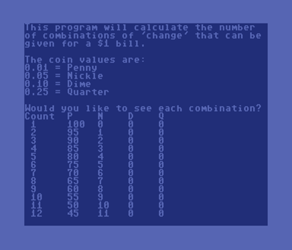
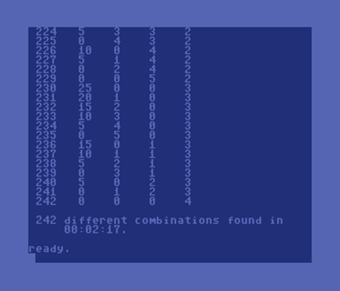
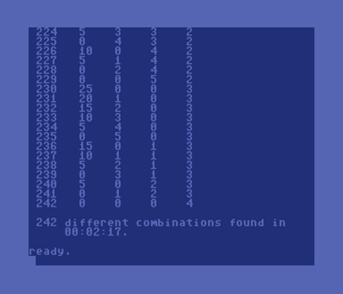
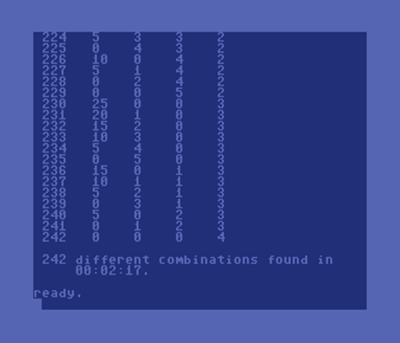

Mike's BASIC Beginnings
Count Change - October 8, 2019
Screen Shots
Program Listing
Comments

 


5 m=100:rem money = $1.00 or 100 pennies
10 print chr$(147);chr$(14);"This program
will calculate the number"
11 print "of combinations of 'change'
that can be"
12 print "given for a $1 bill."
13 print:print "The coin values are:"
14 print "0.01 = Penny":print "0.05 =
Nickle"
15 print "0.10 = Dime":print "0.25 =
Quarter"
16 print
20 print "Would you like to see each
combination?"
25 get k$:yn=(k$="y"):if k$="" then 25
100 p=m:ti$="000000"
130 q=int(m/25)
140 count=0:ps=1
145 if not yn then poke 53265,peek(53265)
and 239
147 if yn then print "Count P N D Q"
150 for qc=0 to q:d=int((m-qc*25)/10)
160 for dc=0 to d:n=int((m-dc*10)/5)
170 for nc=0 to n:p=m-nc*5
180 for pc=0 to p step 5
190 s=pc+nc*5+dc*10+qc*25
200 if s=m then count=count+1:if yn then
gosub 1000
210 next:next:next:next
245 en$=ti$:if not yn then poke 53265,
peek(53265) or 16
250 print:print count;"different
combinations found in"
260 print tab(len(str$(count))+1);
265 print left$(en$,2);":";mid$(en$,3,2)
;":";right$(en$,2);"."
270 end
1000 print count;tab(6);pc;tab(11);nc
;tab(16);dc;tab(21);qc:return
The goal is to have the computer figure out how many combinations of coins (pennies, nickles, dimes, and quarters) can be used to make $1.00. This was based on BASIC code already submitted for the Sinclair ZX Spectrum.
After directly porting the Spectrum code to Commodore BASIC, I was disappointed to see that the algorithm took 46 minutes and 37 seconds to achieve a solution. After thinking about the problem, I was able to optimize the code and get the processing time down to less than 2 minutes and 20 seconds. Algorithm optimizations included things like counting pennies in multiples of 5 (since every other denomination is a multiple of 5) and looping through remainder values instead of processing combinations that are impossible.
The question of "Would you like to see each combination?" is an optional optimization. Printing each combination adds to the overall processing time. Choosing "no" also causes the video processor to be switched off (the screen goes blank) which gives the CPU additional cycles per second. This achieves a total processing time of less than 2 minutes on a US/NTSC Commodore 64.